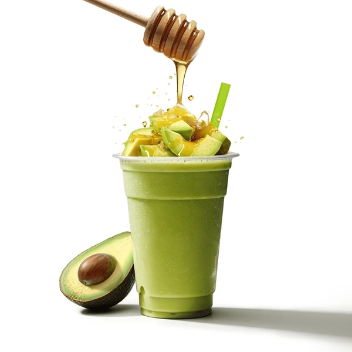

<link href="https://cdn.jsdelivr.net/npm/bootstrap@5.3.8/dist/css/bootstrap.min.css" rel="stylesheet"
  integrity="sha384-sRIl4kxILFvY47J16cr9ZwB07vP4J8+LH7qKQnuqkuIAvNWLzeN8tE5YBujZqJLB" crossorigin="anonymous">
<script src="https://cdn.jsdelivr.net/npm/bootstrap@5.3.8/dist/js/bootstrap.bundle.min.js"
  integrity="sha384-FKyoEForCGlyvwx9Hj09JcYn3nv7wiPVlz7YYwJrWVcXK/BmnVDxM+D2scQbITxI" crossorigin="anonymous"></script>

<nav class="navbar navbar-expand-lg bg-body-tertiary">
  <div class="container-fluid">
     <a class="navbar-brand" href="index.html"></a>
      <button class="navbar-toggler" type="button" data-bs-toggle="collapse" data-bs-target="#navbarSupportedContent"
        aria-controls="navbarSupportedContent" aria-expanded="false" aria-label="Toggle navigation">
        <span class="navbar-toggler-icon"></span>
      </button>
      <div class="collapse navbar-collapse" id="navbarSupportedContent">
        <ul class="navbar-nav me-auto mb-2 mb-lg-0">
          <li class="nav-item">
            <a class="nav-link active" aria-current="page" href="index.html">home</a>
          </li>
          <li class="nav-item">
            <a class="nav-link" href="about.html">about us</a>
          </li>
          <li class="nav-item dropdown">
            <a class="nav-link dropdown-toggle" href="#" role="button" data-bs-toggle="dropdown" aria-expanded="false">
              items
            </a>
            <ul class="dropdown-menu">
              <li><a class="dropdown-item" href="menu2.html">BEEF items </a></li>
              <li><a class="dropdown-item" href="Menu1.html">chicken items</a></li>
              <li><a class="dropdown-item" href="menu3.html">veg items</li>
                <li><a class="dropdown-item" href="menu4.html">drinks</li>
          </li>
        </ul>
        </li>
        <li class="nav-item">
          <a class="nav-link disabled" aria-disabled="true"></a>
        </li>
        </ul>
        <form class="d-flex" role="search">
          <input class="form-control me-2" type="search" placeholder="Search" aria-label="Search" />
          <button class="btn btn-outline-success" type="submit">Search</button>
        </form>
      </div>
</nav>

<div class="card-group">
  <div class="card">
    
    <div class="card-body">
      <h5 class="card-title">mojito</h5>
      <p class="card-text">Juice about" can refer to several things: fruit juice, the 2017 short film Juice,
         or slang for things like power or influence. Fruit juice is a liquid extracted from fruits or vegetables,
          often consumed as a beverage. The film Juice is a commentary on misogyny and patriarchy.
         The slang term "juice" can also mean electricity, gasoline, or financial or political power</p>
      <p class="card-text"><small class="text-body-secondary">Last updated 3 mins ago</small></p>
    </div>
  </div>
  <div class="card">
    
    <div class="card-body">
      <h5 class="card-title">avocado</h5>
      <p class="card-text">Juice about" can refer to several things: fruit juice, the 2017 short film Juice,
         or slang for things like power or influence. Fruit juice is a liquid extracted from fruits or vegetables,
          often consumed as a beverage. The film Juice is a commentary on misogyny and patriarchy.
         The slang term "juice" can also mean electricity, gasoline, or financial or political power</p>
      <p class="card-text"><small class="text-body-secondary">Last updated 3 mins ago</small></p>
    </div>
  </div>
  <div class="card">
    
    <div class="card-body">
      <h5 class="card-title">tender coconut</h5>
      <p class="card-text">Juice about" can refer to several things: fruit juice, the 2017 short film Juice,
         or slang for things like power or influence. Fruit juice is a liquid extracted from fruits or vegetables,
          often consumed as a beverage. The film Juice is a commentary on misogyny and patriarchy.
         The slang term "juice" can also mean electricity, gasoline, or financial or political power.  </p>
      <p class="card-text"><small class="text-body-secondary">Last updated 3 mins ago</small></p>
    </div>
  </div>
</div>
</div>